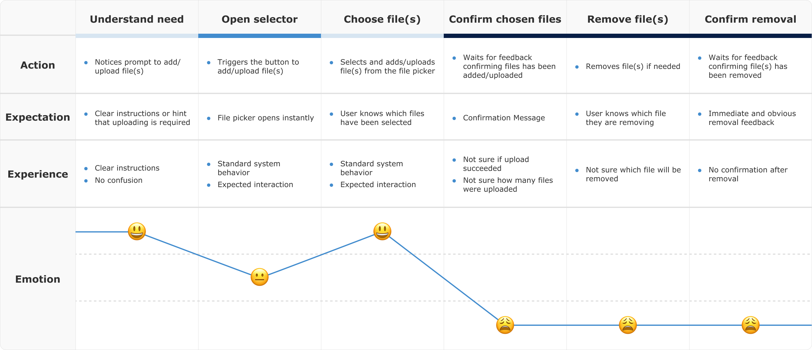
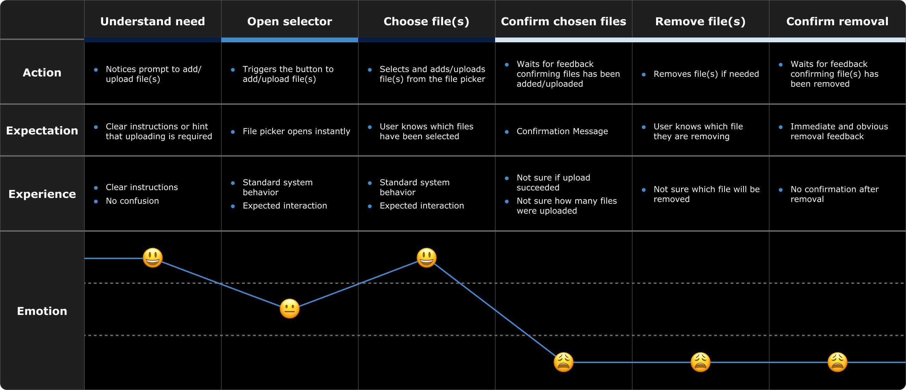

Improving File Uploads for Screen Reader Users
Enhanced the File Upload component by providing screen reader users with helpful confirmation throughout the file upload process
May 2025 - June 2025
Accessibility Analyst,
UX Design
UX Designers,
Software Engineers
Overview
This project focused on making the file upload component more accessible for people using screen readers. While the visual interaction seemed clear, testing with a screen reader revealed several usability gaps that created confusion and frustration. My role was to evaluate the experience, identify barriers, and design improvements that made the flow more intuitive and usable.
The Problem
How might we make the file upload process clearer and more reliable for screen reader users?
Process
To uncover usability gaps, I mapped the upload journey into six steps:
 Accessibility issues identified:
- Unclear upload confirmation – Screen reader users received no clear feedback about which files had been uploaded.
- Ambiguous remove action – The “remove” button didn’t announce which file it applied to, creating uncertainty.
- No feedback after removal – While the interface visually updated, there was no confirmation for screen reader users.
These gaps were not detected by automated accessibility tools, underscoring the value of real-world testing with assistive technology.
My approach to solving them:
- Prototyped fixes using semantic HTML and ARIA attributes to add the missing feedback.
- Validated improvements by replaying each scenario with a screen reader to confirm clarity and consistency.
- Documented findings in a clear before-and-after format.
- Collaborated with the developer to hand off solutions for implementation.
Solutions
Clearer Upload Feedback
aria-describedby to announce file status (e.g., “4 selected (3 ignored)”). This clarified how many files were uploaded and flagged the ignored ones due to upload limits.Contextual Remove Button
sr-only class) so the button announced both the action and file name (e.g., “Remove document.pdf”).Real-Time Removal Feedback
aria-live region, prompting the screen reader to automatically announce updates (e.g., “3 selected (2 ignored)”).Outcome
With these updates:
- Users now receive immediate, descriptive feedback after selecting, removing, or managing files.
- The flow provides full clarity and control, reducing uncertainty.
- Screen reader users can confidently complete the upload process without relying on visual cues.
To bring it all together, here’s a full recording of the improved file upload journey with VoiceOver. It shows how all the enhancements combine into a smooth, reliable end-to-end experience for screen reader users.
Key Learnings
- Test with real users – Automated tools won’t catch everything; real screen reader testing uncovers the true barriers.
- Show, don’t just tell developers – Demonstrating before-and-after experiences makes the impact of accessibility fixes clear, helping developers see why enhancements matter and motivating them to prioritize accessibility.